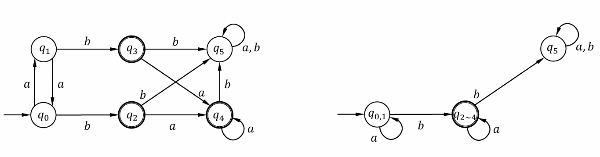
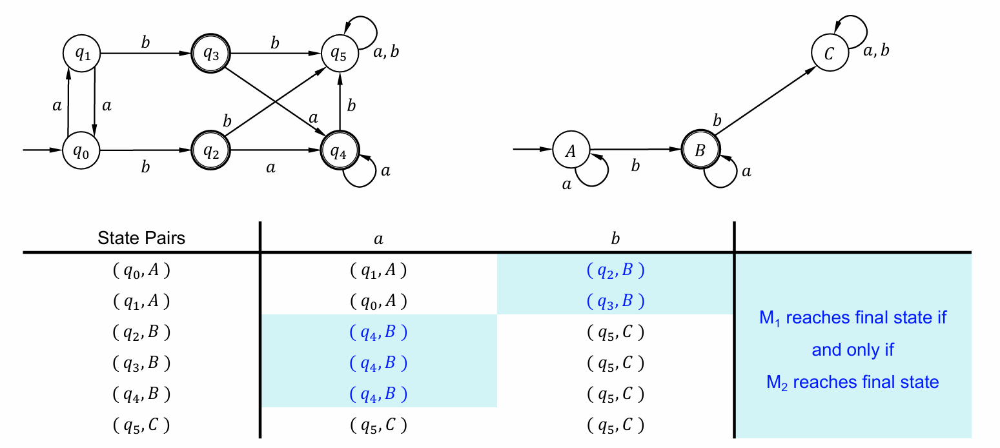
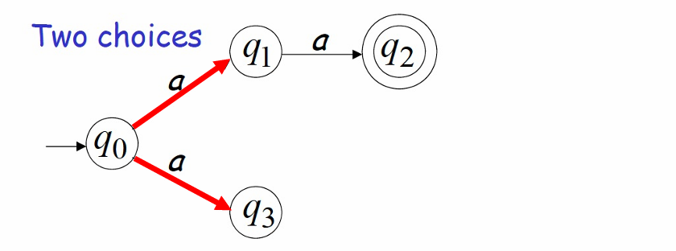
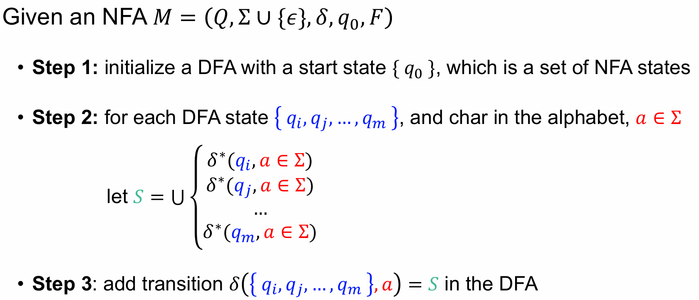
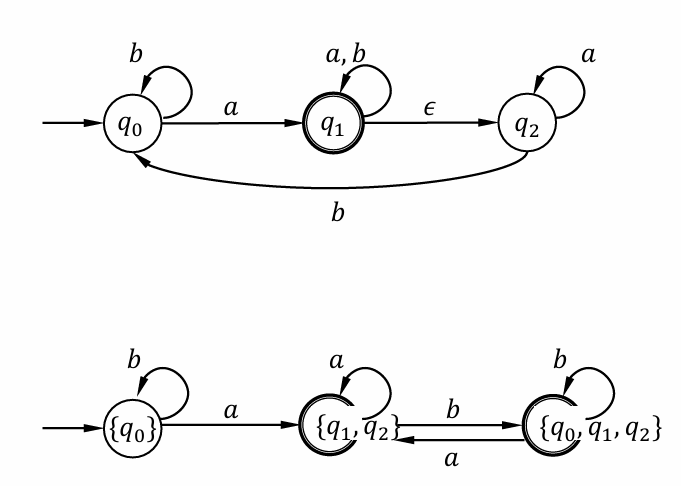
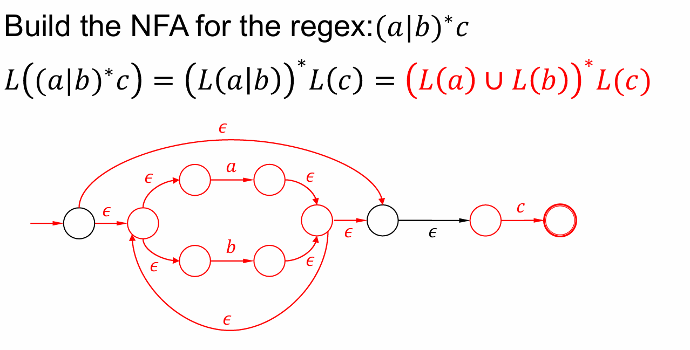
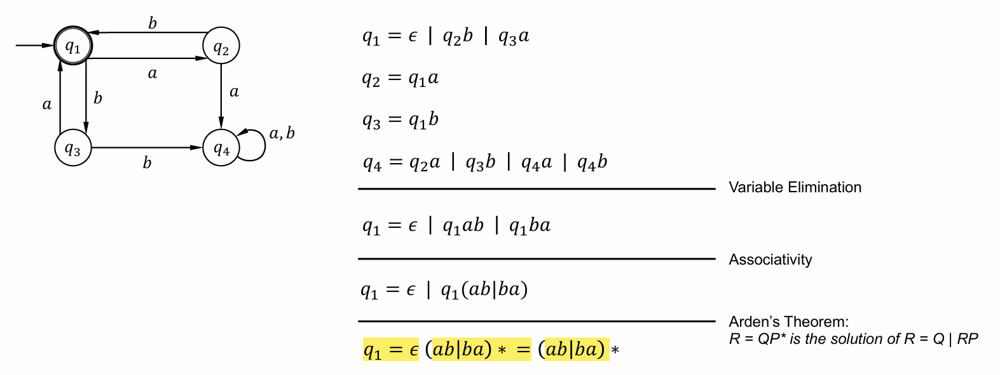

数学基础
- 字母表和字符串
语言（language） 是一个 字符串（string） 的集合，例如：{ cat, dog, … }，字符串是由 字母表（alphabet） 中的字母组成的序列。一个语言是字母表中所有字符串的子集。
字母表示例：𝚺 = { a, b, c, d, …, z }
字符串示例：cat, dog, … - 字符串操作
连接：例如，𝑤1 = 𝑎𝑎𝑏𝑏， 𝑤2 = 𝑏𝑏𝑎𝑎
连接结果：𝑤1𝑤2 = 𝑎𝑎𝑏𝑏𝑏𝑏𝑎𝑎
反转：例如，𝑤 = 𝑎1𝑎2𝑎3𝑎4
反转结果：$𝑤^𝑅$= 𝑎4𝑎3𝑎2𝑎1
长度：例如，𝑤 = 𝑎1𝑎2𝑎3𝑎4
字符串长度：|𝑤| = 4 - 空字符串与子字符串
空字符串：𝜖
|𝜖| = 0，𝜖𝑎𝑎𝑏𝑏 = 𝑎𝑎𝑏𝜖𝜖𝑏 = 𝑎𝑎𝑏𝑏𝜖 = 𝑎𝑎𝑏𝑏
子字符串：连续字符的子序列
例如：𝑎𝑏𝑏𝑎𝑏, 𝑎𝑏𝑏𝑎𝑏, 𝑎𝑏𝑏𝑎𝑏, 𝑎𝑏𝑏𝑎𝑏 - 前缀 prefix 和后缀 suffix：
例如，𝑤 = 𝑢𝑣，其中 𝑢 是前缀，𝑣 是后缀
𝑎𝑏𝑏 的前缀包括：𝜖, 𝑎, 𝑎𝑏, 𝑎𝑏𝑏
𝑎𝑏𝑏 的后缀包括：𝑎𝑏𝑏, 𝑏𝑏, 𝑏, 𝜖 - Power
$𝑤^𝑛$ = 𝑤𝑤…𝑤（n个）
$𝑤^0$ = 𝜖 - Kleene Star
给定字母表 𝚺 = { 𝑎, 𝑏 }，则 𝚺$^{∗}$ = { 𝜖, 𝑎, 𝑏, 𝑎𝑏, 𝑎𝑏𝑏, 𝑎𝑎𝑏, … } - Plus：𝚺+ = 𝚺$^{∗}$ − {𝜖}
- 一个语言是 𝚺∗ 的任意子集，例如：{𝜖}, {𝜖, 𝑎, 𝑏}, …
- 对于 $𝐿_1 = \{𝑎, 𝑏\}$， $𝐿_2 = \{𝑎, 𝑎𝑏\}$ 有以下运算：
$𝐿_1 ∪ 𝐿_2 = \{ 𝑎, 𝑏, 𝑎𝑏\} $
$𝐿_1 ∩ 𝐿_2 = \{𝑎\}$
$𝐿_1 − 𝐿_2 = \{𝑏\}$
$\overline{𝐿} = Σ^{∗} − 𝐿$
$𝐿^{R} = \{𝑤^{R}: 𝑤 ∈ 𝐿\}$
$𝐿_1𝐿_2 = \{𝑥𝑦: 𝑥 ∈ 𝐿_1, 𝑦 ∈ 𝐿_2\}$
$𝐿^n = 𝐿𝐿…𝐿$，$𝐿^0 = \{𝜖\}$
DFA
一个 DFA 是一个五元组：$(Q,Σ,δ,q_0,F)$
- $Q$：状态的有限集合
- $Σ$：输入字符的有限集合（字母表）
- $δ$：状态转移函数，$𝑄×Σ ⟼ Q$，例如 $δ(𝑞, 𝑎) =𝑞’$
- $𝑞_0∈Q$：起始状态
- $𝐹⊆Q$：终止状态的有限子集
DFA 最小化
最小化 DFA 的步骤：
- 分辨最终状态（图例为两个圈）和非最终状态，分为两组。
- 判断状态之间的转移关系，是否属于同一组，进行进一步的分组，直到无法再分。
| 步骤 | 分组 | 注解 |
|---|---|---|
| Step 1 | $\{ 𝑞_0 ,𝑞_1 ,𝑞_5 \},\{𝑞_2 ,𝑞_3 ,𝑞_4\}$ | 分辨最终状态和非最终状态 |
| Step 2 | $\{ 𝑞_0 ,𝑞_1 \},\{𝑞_5 \},\{𝑞_2 ,𝑞_3 ,𝑞_4\}$ | $𝛿(𝑞_0 ,𝑎/𝑏)$ 和 $𝛿(𝑞_1 ,𝑎/𝑏)$ 在同组, $𝛿(𝑞_5 ,𝑎/𝑏)$ 不在 |
| Step 3 | $\{ 𝑞_0 ,𝑞_1 \},\{𝑞_5 \},\{𝑞_2 ,𝑞_3 ,𝑞_4\}$ | 没有可以再分的组 |
最小化结果如右图所示：

DFA Bi-Simulation
检查两个 DFA 是否等价，即$𝐿(𝑀_1) =𝐿(𝑀_2)$
步骤：给定输入字符串，分别让 $M_1$ 和 $M_2$ 同时评估该字符串，只有当两个 DFA 都到达终态时，两个 DFA 才被认为等价。

NFA
NFA 允许在某些状态下有多个转移选择。
例如，给定字符串 aa，第一个转移有两个选择。如果一个选择失败，则尝试其他选择。

NFA也允许**$ϵ$-转移**，即可以在没有读取任何输入的情况下通过 $ϵ$ 转移到下一个状态。
DFA 和 NFA 转换
每个 NFA 都有一个等价的 DFA，但并不是每个 DFA 都有等价的 NFA。通过子集构造法，可以将 NFA 转换为等价的 DFA。
子集构造法
子集构造法是一种用于将 NFA 转换为 DFA 的方法。该方法通过创建 NFA 状态的集合来形成 DFA 的状态，并重新定义转移规则。
在子集构造法中，DFA 的每个状态对应着 NFA 状态集的一个子集。通过这种方法，NFA 可以被转换成一个确定性的 DFA。

如果任意 $q_i$ 是终止状态，那么其所在的 S 也是 DFA 的终止状态。
例如：

🌟由于 DFA 的状态由 NFA 状态的集合组成，因此一个具有 $𝑛$ 个状态的 NFA 可以被转换为至多 $2^𝑛$ 个状态的 DFA。
正则语言
给定一个DFA：$M = (Q, \Sigma, \delta, q_0, F)$，由 DFA 接受的语言可表示为：
$$𝐿(𝑀) =\{𝑤∈Σ^{∗}:𝛿^{∗}(𝑞_0, 𝑤) ⊆𝐹\}$$
给定一个NFA：$M = (Q, \Sigma∪\{𝜖\}, \delta, q_0, F)$，由 DFA 接受的语言可表示为：
$$𝐿(𝑀) =\{𝑤∈Σ^{∗}:𝛿^{∗}(𝑞_0, 𝑤)∩𝐹≠∅ \}$$
如果存在一个DFA/NFA $M$ 使得 $L = L(M)$，则称语言 $L$ 为正则语言（Regular Language）。
闭包性质（Closure Properties）
给定两个正则语言 $L_1$ 和 $L_2$，则以下运算的结果仍是正则语言：
- 并（Union）：$L_1 \cup L_2$
以上都可以通过画出 DFA/NFA 来证明是正则语言。而有了以上性质基础，可直接通过 $\overline{\overline{L_1}\cup\overline{L_2}}$ 来证明交集运算同样是正则语言。
正则表达式
基本正则表达式（Primitive Regex）：
空集 $\emptyset$，空字符串 $\epsilon$，单个字符 $a$。
$r_1? = \epsilon \mid r_1$
如果两个正则表达式表示相同的语言，那么它们是等价的。换句话说，对于任意输入字符串，如果它被第一个正则表达式接受，那么它也会被第二个正则表达式接受，反之亦然。
正则表达式与正则语言的等价性
- 任何正则表达式都表示一个正则语言（== DFA/NFA）
证明是正则表达式：可以表示为正则语言，即一定被 DFA/NFA 接收，也就是能把图画出来  - 任何正则语言(== DFA)都可以由正则表达式表示
Pumping Lemma 泵引理
如果 $L$ 是一个无限正规语言，则必定存在一个整数 $m$，使得：对于任何字符串 $w \in L$，且 $|w| \geq m$，可以将 $w$ 分解为：
$$w = xyz$$
满足以下条件：
- $|xy| \leq m$
- $|y| \geq 1$
- 对于任意 $k \geq 0$，字符串 $xy^k z \in L$
由符号 𝑎 和 𝑏 组成的某种形式的语言是否是正则语言?
使用泵引理证明 $L = { a^n b^n }$ 不是正规语言:
假设 $L$ 是正规语言，则存在一个整数 $m$，对于任意字符串 $w = a^m b^m$，可分解为：
$$w = xyz, x = a^{i}, y = a^{j}, z = a^{m-i-j}b^{m}$$
则令 $k = 2$，有：
$$w’ = xy^2z = a^{m+j}b^m ≠ L$$
这与 $L$ 为正规语言的假设矛盾，因此 $L$ 不是正规语言。